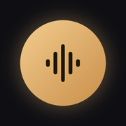

Hamorineアプリの不具合報告・ご要望・その他ご質問は、下記のメールアドレスまでご連絡ください。内容を確認し、順次対応いたします。不具合のご報告の際は、お使いのiPhoneの機種とiOSのバージョンを添えていただけると助かります。
リアルタイムでハモるには、有線イヤホンが必要です。スピーカーから鳴らすと音がマイクに戻ってハウリングするため、イヤホンをつないでいないときはスタートできません。
Bluetoothイヤホン（AirPodsなど）は使えません。Bluetoothでは自分の声とハモリが0.2秒ほど遅れて聞こえ、うまく歌えないためです。iPhoneの端子（LightningまたはUSB-C）に直接つなぐイヤホンか、変換アダプタを使った有線イヤホンをお使いください。歌っている途中でイヤホンが外れると、自動で止まります。
マイクへのアクセスを許可していない可能性があります。iPhoneの「設定」→「Hamorine」→「マイク」をオンにしてください。
ハモリは、選ばれている曲のキー（調）の音階に合わせて作ります。違和感があるときは、キーのところをタップして、歌っている曲のキーを選び直してください。録音は、なるべく静かな場所で、はっきりと歌うと、きれいなハモリになります。エアコンやパソコンのファンの音が気になるときは、「ノイズを抑える」をオンにしてください。
「保存」または「共有」を押すと、動画広告を見るかをお尋ねします。動画広告を1本最後まで見ると、そのあと1時間のあいだ、保存と共有が何回でもできます。広告を読み込めなかったとき（オフラインのときなど）は、広告なしでそのまま保存・共有できます。
「保存」では、「ファイル」アプリの好きな場所にm4a形式の音声ファイルとして保存します。「共有」では、メッセージやSNSなど、共有シートで選んだアプリに送れます。
録音は、お使いの端末内にのみ保存されているため、アプリを削除すると消えてしまいます。残しておきたい録音は、「保存」で「ファイル」アプリに書き出しておくことをおすすめします。
本アプリは、無料でご利用いただくために、画面の下にバナー広告を表示しています。また、保存・共有の前に動画広告を表示します。広告の取り扱いについては、プライバシーポリシーの「広告について」をご覧ください。
録音した音声をSNSや動画サイトなどで公開する際は、著作権や、各サービスの利用規約・ルールに従ってください。ご自身の声であっても、他人が作った楽曲を歌って公開する場合は、その楽曲の著作権が関わります。他人の楽曲や音源（CD・配信の音源やカラオケの伴奏など）の利用は、ユーザーご自身の責任でお願いいたします。
For bug reports, requests, or any other questions, please email us at the address below. We will review your message and reply as soon as we can. When reporting a problem, it helps to include your iPhone model and iOS version.
Harmonizing live requires wired earphones. Playing through the speaker feeds back into the microphone and causes howling, so you can't start without earphones.
Bluetooth earphones (such as AirPods) can't be used. With Bluetooth, your voice and the harmony reach your ears about 0.2 seconds late, which makes singing hard. Please use earphones that plug directly into your iPhone's port (Lightning or USB-C), or wired earphones with an adapter. If the earphones are unplugged while you sing, the app stops automatically.
Microphone access may not be allowed. In the iPhone Settings app, go to Hamorine and turn on Microphone.
The harmony follows the scale of the selected key. If it sounds off, tap the key and choose the key of the song you are singing. For a cleaner harmony, record in a quiet place and sing clearly. If air conditioner or computer fan noise bothers you, turn on "Reduce noise".
When you tap "Save" or "Share", the app asks whether you want to watch a video ad. Watch one video ad to the end, and you can save and share as many times as you like for 1 hour. If an ad can't be loaded (for example, when you are offline), you can save or share without one.
"Save" stores an m4a audio file anywhere you choose in the Files app. "Share" sends it to an app you choose in the share sheet, such as Messages or a social app.
Recordings are stored only on your device, so they are deleted if you delete the app. We recommend exporting the recordings you want to keep to the Files app with "Save".
To keep the app free, it shows banner ads at the bottom of the screen, and a video ad before saving or sharing. For how ads handle data, see "Advertising" in the Privacy Policy.
When you post your recordings on social media, video sites, or other services, please follow copyright law and each service's terms and rules. Even with your own voice, singing a song written by someone else and publishing it involves that song's copyright. You are responsible for any use of other people's songs or recordings (such as CD or streaming audio, or karaoke backing tracks).